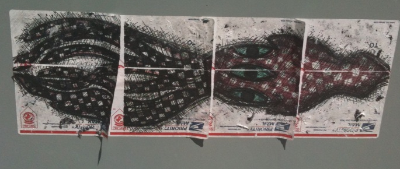

A headfoot I noticed:


I think he has too many eyes, don't you?
This entry was posted on Tuesday, April 27th, 2010 at 9:20 AM and is filed under Art, Buckeye. You can follow any responses to this entry through the RSS 2.0 feed. Both comments and pings are currently closed.